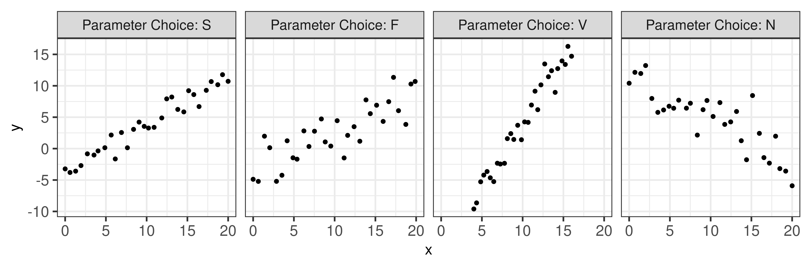
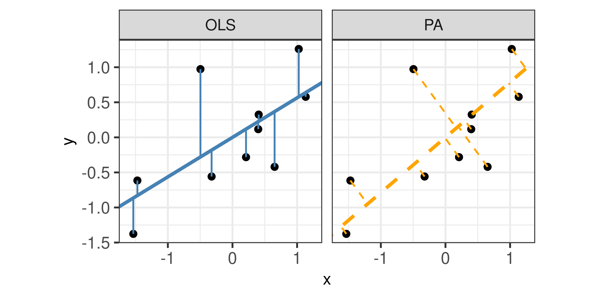
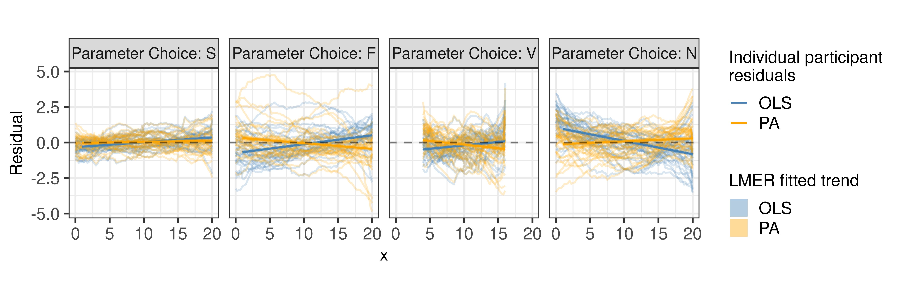

Eye Fitting Straight Lines in the Modern Era
Abstract
How do statistical regression results compare to intuitive, visually fitted results? Fitting lines by eye through a set of points has been explored since the 20th century. Common methods of fitting trends by eye involve maneuvering a string, black thread, or ruler until the fit is suitable, then drawing the line through the set of points. In 2015, the New York Times introduced an interactive feature, called ‘You Draw It’, where readers were asked to input their own assumptions about various metrics and compare how these assumptions relate to reality. In this paper, we validate ‘You Draw It’ as a method for graphical testing, comparing results to the less technological method utilized in and extending that study with formal statistical analysis methods. Results were consistent with those found in the previous study; when shown points following a linear trend, participants tended to fit the slope of the first principal component over the slope of the least-squares regression line. This trend was most prominent when shown data simulated with larger variances. This study reinforces the differences between intuitive visual model fitting and statistical model fitting, providing information about human perception as it relates to the use of statistical graphics.
1 Introduction
We all use statistical graphics, but how do we know that the graphics we use are communicating properly? When creating a graphic, we must consider the design choices most effective for conveying the intended result. For instance, we may decide to highlight the relationship between two variables in a scatterplot by including a trend line, or adding color to highlight clustering (VanderPlas and Hofmann 2017). These design choices require that we understand the perceptual and visual biases that come into play when creating graphics, and as graphics are evaluated visually, we must use human testing to ground our understanding in empiricism.
Much of the research on the perception of visual features in charts has been conducted in psychophysics and tests for accuracy and quantitative comparisons when understanding a plot. Cleveland and McGill (1984) conducted a series of cognitive tasks designed to establish a hierarchy of visual components for making comparisons. For example, it is more effective to display information on an \(x\) or \(y\) axis rather than using color in order to reduce the visual effort necessary to make numerical comparisons. Cleveland and McGill (1985) found that assessing the position of points along an axis is easier than determining the slope of a line. Other studies focused on the viewers’ ability to perceive the strength of the relationship between \(x\) and \(y\) coordinates in a scatterplot. For instance, when the data appear dense, viewers tend to overestimate the magnitude of the correlation coefficient (Cleveland, Diaconis, and McGill 1982; Lauer and Post 1989). Cleveland (1993) provided an argument for displaying cyclical patterns with an aspect ratio which sets the curve close to 45\(^{\circ}\). Kosslyn and Kosslyn (2006) examined how Gestalt principles of perceptual organization are instrumental in extracting data from a chart. For example, Ciccione and Dehaene (2020) conducted a study to support data points located closer together are more likely to be perceived as the same group and Appelle (1972) found that it is easier to discriminate vertical and horizontal lines than oblique lines. The results of these cognitive tasks provided some consistent guidance for chart design; however, other methods of visual testing can further evaluate design choices and help us understand cognitive biases related to the evaluation of statistical charts.
1.1 Testing Statistical Graphics
We need human testing of graphics in order to draw broad conclusions, develop guidelines for graphical design, and improve graphical communication. Studies might ask participants to identify differences in graphs, read information off of a chart accurately, use data to make correct real-world decisions, or predict the next few observations. All of these types of tests require different levels of use and manipulation of the information being presented in the chart. Early research studies considered graphs from a psychological perspective (Spence 1990; Lewandowsky and Spence 1989), testing participants’ abilities to detect a stimulus or a difference between two stimuli. Psychophysical methods have been used to test graphical perception, as in VanderPlas and Hofmann (2015a), which used the method of adjustment - a technique which requires participants to alter a changing stimulus to match a given constant stimuli (Gescheider 1997)- to estimate the magnitude of the impact of the sine illusion. However, there are more modern testing methods that have been developed since the heyday of psychophysics.
One major development in statistical graphics which led to more advanced testing methods is Wilkinson’s Grammar of Graphics (Wilkinson 2013). The Grammar of Graphics serves as the fundamental framework for data visualization with the notion that graphics are built from the ground up by specifying exactly how to create a particular graph from a given data set. Visual representations are constructed through the use of “tidy data” which is characterized as a data set in which each variable is in its own column, each observation is in its own row, and each value is in its own cell (Wickham and Grolemund 2016). Graphics are viewed as a mapping from variables in a data set (or statistics computed from the data) to visual attributes such as the axes, colors, shapes, or facets on the canvas in which the chart is displayed. Software, such as Hadley Wickham’s ggplot2 (Wickham 2011), aims to implement the framework of creating charts and graphics as the Grammar of Graphics recommends.
Combining the Grammar of Graphics with another tool for statistical graphics testing, the statistical lineup, yields a method for evaluating graphical design choices. Buja et al. (2009) introduced the lineup protocol to provide a framework for inferential testing. A statistical lineup is a plot consisting of smaller panels where the viewer is asked to identify the target panel containing the real data from among a set of decoy null plots which display data under the assumption there is no relationship. If the viewer can identify the target panel randomly embedded within the set of null panels, this suggests that the real data is visually distinct from data generated under the null model. Through experimentation, methods such as the lineup protocol allow researchers to conduct studies geared at understanding human ability to conduct tasks related to the perception of statistical charts such as differentiation, prediction, estimation, and extrapolation (VanderPlas and Hofmann 2017, 2015b; Hofmann et al. 2012). The advancement of graphing software provides the tools necessary to develop new methods of testing statistical graphics. While these testing methods are excellent, there is one particular subset of statistical graphics testing methods which we intend to develop further in this paper: assessing graphics by fitting statistical models “by eye”.
1.2 Fitting Trends by Eye
Initial studies in the 20th century explored the use of fitting lines by eye through a set of points (Unwin and Wills 1988; Finney 1951; Mosteller et al. 1981). Common methods of fitting trends by eye involved maneuvering a string, black thread, or ruler until the fit is suitable, then drawing the line through the set of points. Recently, Ciccione and Dehaene (2021) conducted a comprehensive set of studies investigating human ability to detect trends in graphical representations using physical adjustment and manipulation methods.
Finney (1951) used graphical testing for computational purposes: to determine the effect of stopping iterative maximum likelihood calculations after one iteration. Many techniques in statistical analysis are performed with the aid of iterative calculations such as Newton’s method or Fisher’s scoring. The author was interested in whether one iteration of calculations was sufficient in the estimation of parameters connected with pharmaceutical dose-response relationships. In pharmaceuticals, one measure of interest is the relative potency between a test preparation of doses and standard preparation of does; relative potency is calculated as the ratio of two equally effective doses between the two preparation methods. In this study, twenty-one scientists were recruited via postal mail and asked to “rule two lines” in order to judge by eye the positions for a pair of parallel probit regression lines in a biological assay. The author then computed one iterative calculation of the relative potency based on starting values as determined by the pair of lines drawn by each participant. The author then compared these relative potency estimates to that which was estimated by the full probit technique (reaching convergence through multiple iterations). Results of the study indicated that one cycle of iterations for calculating the relative potency was sufficient based on the starting values provided by eye from the participants.
Mosteller et al. (1981) sought to understand the properties of least squares and other computed lines by establishing one systematic method of fitting lines by eye. Participants were asked to fit lines by eye to four scatterplots using an 8.5 x 11 inch transparency with a straight line etched completely across the middle. A latin square design with packets of the set of points stapled together in four different sequences was used to determine if there is an effect of order of presentation. It was found that order of presentation had no effect and that participants tended to fit the slope of the principal axis (PA) (error minimized orthogonally, both horizontal and vertical, to the regression line) over the slope of the least squares regression line (error minimized vertically to the regression line).
In Ciccione and Dehaene (2021), participants were asked to judge trends, estimate slopes, and conduct extrapolation. To estimate slopes, participants were asked to report the slope of the best-fitting regression line using a track-pad to adjust the tilt of a line on the screen. Results indicated the slopes participants reported were always in excess of the ideal slopes, both in the positive and in the negative direction, and those biases increase with noise and with number of points. This supports the results found in Mosteller et al. (1981) and suggest that participants might use Deming regression (Deming 1943; Linnet 1998; Martin 2000), which minimizes the Euclidean distance of points from the line, when fitting a line to a noisy scatterplot.
While not explicitly intended for perceptual testing, in 2015, the New York Times introduced an interactive feature, called ‘You Draw It’ (Aisch, Cox, and Quealy 2015; Buchanan, Park, and Pearce 2017; Katz 2017). Readers were asked to input their own assumptions about various metrics and compare how these assumptions relate to reality. The New York Times team utilizes Data Driven Documents (D3) (Bostock, Ogievetsky, and Heer 2011) that allows readers to predict these metrics through the use of drawing a line on their computer screen with their computer mouse. After the reader has completed drawing the line, the actual observed values are revealed and the reader may check their estimated knowledge against the actual reported data. While this interactive feature is designed to get readers to confront their own intuitions about data in the news, we feel that the interactivity of this method may be useful for the purpose of graphical testing and measuring the patterns humans see in data.
In this paper, we establish ‘You Draw It’, adapted from the New York Times feature, as a new tool for graphical testing. Our visual system is naturally built to look for structure and identify patterns. For instance, points going down from left to right indicates a negative correlation between the \(x\) and \(y\) variables. Our research is intended to implement the ‘You Draw It’ feature as a way to measure the patterns we see in data. The graphical testing method used in this study differs from prior methods found in Mosteller et al. (1981) and Ciccione and Dehaene (2021) by allowing participants to freely draw estimated trend lines - a method which extends nicely to a nonlinear setting. We validate the ‘You Draw It’ method by replicating the less technological study conducted by Mosteller et al. (1981). In Section 2 we describe our participant sample, the graphical task to be completed, and the data generation process and study design. Section 3 describes the participant data collected and shares results from the analyses of the data using mixed models. Overall conclusions and discussion of results are presented in Section 4 with extensions to the current work suggested in Section 5. The RShiny applet to complete the study, participant data used for analysis, and code to replicate the analysis can be found in the Section 6. Based on previous research, we hypothesize that visual regression tends to mimic regression based on the principal axis rather than an ordinary least squares regression. In order to assess this hypothesis, we introduce a method for statistically modeling the participant drawn lines using generalized additive mixed models (GAMM). While the focus of this paper is to share the results from the validation study which uses the new ‘You Draw It’ method to evaluate visually fitted linear trends to statistical regression results, the intent of this work is to set the foundation and demonstrate the strength of the combination of the ‘You Draw It’ method and GAMM analyses for testing statistical graphics and to extend the use of the method beyond the linear setting.
2 Methods
Annotation Key
Study design and data collection
Setting - location, timeframe, recruitment/inclusion criteria
Sampling method
Variables collected (and any derived variables)
Statistical analysis methods
2.1 Participants
Participants were recruited through through Twitter, Reddit, and direct email in May 2021. A total of 35 individuals completed 131 unique ‘You Draw It’ task plots. Data were collected as a part of a pilot study meant to test the applet; therefore, either voluntary participant dropout or disconnection from a server not designed to accommodate large magnitudes of participants resulted in missing plots in our data set for analysis. All participants had normal or corrected to normal vision and signed an informed consent form. The experimental tasks took approximately 15 minutes to complete. As this is a pilot study, participants from Twitter and Reddit pages related to data visualization voluntarily completed the study and likely have an interest in fields related to statistics and want to help advance research in graphics. While this study does utilize a convenience sample, as this is primarily a perceptual task, previous results have found few differences between expert and non-expert participants in this context (VanderPlas and Hofmann 2015b). These data were collected to validate this method of graphical testing, with the hopes of providing a new tool to assess graphical perception interactively. Participants completed the experiment on their own computers in an environment of their choosing. The experiment was conducted and distributed through a Shiny application (Chang et al. 2021) found at emily-robinson.shinyapps.io/you-draw-it-validation-applet.
2.2 ‘You Draw It’ Task
In the study, participants were shown an interactive scatterplot Figure 1 along with the prompt, “Use your mouse to fill in the trend in the yellow box region.” The yellow box region moved along as the user drew their trend-line, providing a visual cue which indicates where the user still needed to complete a trend line. After the entire domain had been visually estimated or predicted, the yellow shaded region disappeared, indicating the participant had completed the task. Data Driven Documents (D3), a JavaScript-based graphing framework that facilitates user interaction, was used to create the ‘You Draw It’ visual. In order to allow for user interaction and data collection, we integrated the D3 visual into Shiny using the r2d3 package (Strayer, Luraschi, and Allaire 2022). While the interface is highly customized to this particular task, we hope to generalize the code and provide a Shiny widget in an R package soon.
2.3 Data Generation
All data processing was conducted in R software environment for statistical computing and graphics (R Core Team 2021). A total of \(N = 30\) points \((x_i, y_i), i = 1,...,N\) were generated for \(x_i \in [x_{min}, x_{max}]\) where \(x\) and \(y\) have a linear relationship. Data were simulated based on the point-slope form of a linear model with additive errors: \[\begin{align} y_i = \beta_1(x_i-\bar{x}) + y_{\bar{x}} + e_i \\ \text{with } e_i & \sim N(0, \sigma^2). \nonumber \end{align}\]
Model equation parameters, \(\beta_1\), \(y_{\bar{x}}\), and parameter choice letter names (S, F, V, N), were selected to reflect the four data sets used and labeled in Mosteller et al. (1981) Table 1. The mean of the generated \(x\) values and the predefined \(y\) value at \(\bar x\), denoted \(y_{\bar x}\) were used in the point-slope equation of a line. Parameter choices S, F, and N simulated data across a domain of 0 to 20. Parameter choice F produced a trend with a positive slope and a large variance while N had a negative slope and a large variance. In comparison, S showed a trend with a positive slope and a small variance while V yielded a steep positive slope with a small variance over the domain of 4 to 16. Figure 2 illustrates an example of simulated data for all four parameter choices intended to reflect the trends in Mosteller et al. (1981). Aesthetic design choices were made consistent across each of the interactive ‘You Draw It’ task plots. The y-axis range extended 10% beyond (above and below) the range of the simulated data points to allow for users to draw outside the simulated data set range and avoid anchoring their lines to the corners of the plot.
| Parameter Choice | \(y_{\bar{x}}\) | \(\beta_1\) | \(\sigma\) | Domain |
|---|---|---|---|---|
| S | 3.88 | 0.66 | 1.30 | (0,20) |
| F | 3.90 | 0.66 | 1.98 | (0,20) |
| V | 3.89 | 1.98 | 1.50 | (4,16) |
| N | 4.11 | -0.70 | 2.50 | (0,20) |

2.4 Study Design
This experiment was conducted as part of a larger study of the perception of log and linear scales; for simplicity, we focused on the study design and methods related to the current study. Each data set was generated randomly and independently for each participant at the start of the experiment and mapped to a scatterplot. Participants in the study were shown two ‘You Draw It’ practice plots in order to train participants in the skills associated with executing the task - in particular, the responsiveness of the applet requires that participants draw a line at a certain speed, ensuring that all of the evenly spaced points along the hand-drawn line are filled in. During the practice session, participants were provided with instruction prompts accompanied by a .gif and a practice plot. Instructions guided participants to start at the edge of the yellow box, to make sure the yellow shaded region was moving along with their mouse as they drew, and that they could draw over their already drawn line. Practice plots were then followed by one of each of the four ‘You Draw It’ task plots associated with the current study (S, F, V, and N). The order of the task plots was randomly assigned for each individual in a completely randomized design.
3 Results
3.1 Fitted Regression Lines
We compared the participant drawn line to two regression lines determined by ordinary least squares (OLS) regression and regression based on the principal axis (PA). Figure 3 illustrates the difference between an OLS regression line which minimizes the vertical distance of points from the line and a regression line based on the PA which minimizes the Euclidean distance of points (orthogonal) from the line.
Due to the randomness in the data generation process, the actual slope of the linear regression line fit through the simulated points could differ from the predetermined slope. Therefore, we fit an OLS regression to each scatterplot to obtain estimated parameters \(\hat\beta_{0,OLS}\) and \(\hat\beta_{1,OLS}\). Fitted values, \(\hat y_{k,OLS}\), were then obtained every 0.25 increment across the domain from the OLS regression equation, \(\hat y_{k,OLS} = \hat\beta_{0,OLS} + \hat\beta_{1,OLS} x_k\), for \(k = 1, ..., 4 x_{max} +1\). The PA regression slope, \(\hat\beta_{1,PA}\), and y-intercept, \(\hat\beta_{0,PA}\), were determined using the mcreg function in the mcr package in R (Manuilova, Schuetzenmeister, and Model 2021) which implements Deming regression (equivalent to a regression based on the slope of the first principal axis). Fitted values, \(\hat y_{k,PA}\) were then obtained every 0.25 increment across the domain from the PA regression equation, \(\hat y_{k,PA} = \hat\beta_{0,PA} + \hat\beta_{1,PA} x_k\), for \(k = 1, ..., 4 x_{max} +1\).

3.2 Residual Trends
For each participant, the final data set used for analysis contained \(x_{ijk}, y_{ijk,drawn}, \hat y_{ijk,OLS}\), and \(\hat y_{ijk,PA}\) for parameter choice \(i = 1,2,3,4\), j = \(1,...,N_{participant}\), and \(x_{ijk}\) value for increment \(k = 1, ...,4 x_{max} + 1\). Using both a linear mixed model and a generalized additive mixed model, comparisons of vertical residuals in relation to the OLS fitted values (\(e_{ijk,OLS} = y_{ijk,drawn} - \hat y_{ijk,OLS}\)) and PA fitted values (\(e_{ijk,PA} = y_{ijk,drawn} - \hat y_{ijk,PA}\)) were made across the domain. Figure 4 displays an example of all three fitted trend lines for parameter choice F.

3.2.1 Linear Trend Constraint
The ‘You Draw It’ method does not restrict participants to draw a straight line as other methods would, such as using a ruler. Instead, participants are allowed to freely draw a line with potential curvature. Using the lmer function in the lme4 package (Bates et al. 2015), a linear mixed model (LMM) was fit separately to the OLS residuals and PA residuals, emulating the effect of constraining participants to draw a linear trend. Both fixed and random parameter estimates in the LMM were determined by optimizing the restricted maximum likelihood (REML) through penalized least squares. Parameter choice, \(x\), and the interaction between \(x\) and the parameter choice were treated as fixed effects with a random participant effect included to account for variation due to participant. The LMM equation for each fit (OLS and PA) is given by: \[
\begin{equation}
y_{ijk,drawn} - \hat y_{ijk,fit} = e_{ijk,fit} = \left[\gamma_0 + \alpha_i\right] + \left[\gamma_{1} x_{ijk} + \gamma_{2i} x_{ijk}\right] + p_{j} + \epsilon_{ijk}
\end{equation}\] where
- \(y_{ijk,drawn}\) is the drawn \(y\) value for the \(i^{th}\) parameter choice, \(j^{th}\) participant, and \(k^{th}\) increment of \(x\) value
- \(\hat y_{ijk,fit}\) is the fitted \(y\) value for the \(i^{th}\) parameter choice, \(j^{th}\) participant, and \(k^{th}\) increment of \(x\) value corresponding to either the OLS or PA fit
- \(e_{ijk,fit}\) is the residual between the drawn and fitted \(y\) values for the \(i^{th}\) parameter choice, \(j^{th}\) participant, and \(k^{th}\) increment of \(x\) value corresponding to either the OLS or PA fit
- \(\gamma_0\) is the overall intercept
- \(\alpha_i\) is the effect of the \(i^{th}\) parameter choice (S, F, V, N) on the intercept
- \(\gamma_1\) is the overall slope for \(x\)
- \(\gamma_{2i}\) is the effect of the parameter choice on the slope
- \(x_{ijk}\) is the \(x\) value for the \(i^{th}\) parameter choice, \(j^{th}\) participant, and \(k^{th}\) increment
- \(p_{j} \sim N(0, \sigma^2_{participant})\) is the random error due to the \(j^{th}\) participant’s characteristics
- \(\epsilon_{ijk} \sim N(0, \sigma^2)\) is the residual error.
Constraining the residual trend to a linear fit, Figure 5 shows the estimated trend line of the residuals between the participant drawn points and fitted values for both the OLS regression line and PA regression line. Estimated residual trend lines are overlaid on the observed individual participant residuals. Results indicate the estimated trends of PA residuals (orange) appear to align closer to the \(y=0\) horizontal (dashed) line than the OLS residuals (blue). In particular, this trend is more prominent in parameter choices with large variances (F and N). These results are consistent to those found in Mosteller et al. (1981) indicating participants fit a trend-line closer to the estimated regression line with a slope based on the first principal axis than the estimated OLS regression line.

3.2.2 Smoothing Spline Trend
Eliminating the linear trend constraint, the bam function in the mgcv package (Wood 2017) was used to fit a generalized additive mixed model (GAMM) separately to the OLS residuals and PA residuals to allow for estimation of smoothing splines. The bam function is used to fit GAMM’s to very large data sets and use lower memory than the gam function; REML is used to estimate parameters and smoothing splines. Parameter choice was treated as a fixed effect with no estimated intercept and a separate smoothing spline for \(x\) was estimated for each parameter choice. A random participant effect was included to account for variation due to participant and a random spline for each participant accounted for variation in spline for each participant. Defining \(e_{ijk,fit}\) the same as in equation (2) above, the GAMM equation for each fit (OLS and PA) residuals is given by: \[
\begin{equation}
e_{ijk,fit} = \alpha_i + s_{i}(x_{ijk}) + p_{j} + s_{j}(x_{ijk})
\end{equation}
\] where
- \(e_{ijk,fit}\) is the same as equation
- \(\alpha_i\) is the intercept for the parameter choice \(i\)
- \(s_{i}\) is the smoothing spline for the \(i^{th}\) parameter choice
- \(x_{ijk}\) is the \(x\) value for the \(i^{th}\) parameter choice, \(j^{th}\) participant, and \(k^{th}\) increment
- \(p_{j} \sim N(0, \sigma^2_{participant})\) is the error due to participant variation
- \(s_{j}\) is the random smoothing spline for each participant.
Allowing for flexibility in the residual trend, Figure 6 shows the estimated trend line of the residuals between the participant drawn points and fitted values for both the OLS regression line and PA regression line. Estimated residual trends were overlaid on the observed individual participant residuals. The results of the GAMM align with those shown in Figure 5 providing support that estimated trends of PA residuals (orange) appear to align closer to the \(y=0\) horizontal (dashed) line than the OLS residuals (blue) for scatterplots with more noise (F and N). By fitting smoothing splines, we can determine whether participants naturally fit a straight trend-line to the set of points or whether they deviate throughout the domain. In particular, in scatterplots with smaller variance (S and V), we can see that participants began at approximately the correct starting point then deviated away from the fitted regression lines and corrected for their fit toward the end of their trend-line. In scatterplots with larger variance (F and N), participants estimated their starting value in the extreme direction of the OLS regression line based on the increasing or decreasing trend but more accurately represented the starting value of the PA regression line. As participants continued their trend-line, they crossed through the OLS regression line indicating they estimated the slope in the extreme direction. These results provide further insight into the curvature humans perceive in a set of points.

4 Discussion and Conclusion
The intent of this research was to adapt ‘You Draw It’ from the New York Times feature as a tool and method for testing graphics and introduce a method for statistically modeling the participant drawn lines. We provided support for the validity of the ‘You Draw It’ method by replicating the study found in Mosteller et al. (1981). Using generalized additive mixed models, we assessed the deviation of the participant drawn lines from the statistically fitted regression lines. Our results found that when shown points following a linear trend, participants visually fit a regression line that mimics the first principal axis regression as opposed to ordinary least squares regression. Data simulated with a larger variance provided strong support for a participants tendency to visually fit the first principal axis regression. We utilized modern technology to replicate a study conducted 40 years ago, and strengthened the original results with current analysis methods which allow for more flexibility and sophistication. Our results indicate that participants minimized the distance from their drawn regression line over both the \(x\) and \(y\) axis simultaneously. We allowed participants to draw trend lines that deviated from a straight line and gained an insight into the curvature the human eye perceives in a set of points. Researchers in cognitive and human movement sciences have found that human arm movement is a complex task (Miall and Haggard 1995; Rousset, Bérard, and Ortega 2015). The ‘You Draw It’ method described in this paper uses indirect interaction in which the mouse position and resulting visual line on the screen are dissociated. Therefore, curvature found in participant drawn lines from a straight lines could potentially be explained by the lack of coordination which results from the eye-hand dissociation from indirect drawing and the distortion of visual perception affecting the curvature of movements. Additionally, there is a training effect related to the completion of the ‘You Draw It’ task - the movement of the line must be slow so that the visual representation on the screen can accurately capture each movement. De Graaf, Sittig, and Gon (1991) conducted a study in which participants moved their hand slowly from an initial position in front of them to a visual target (movement task); they were then asked to repeat the task using different sizes of pointers (perceptual task). Their results indicated that deviations from the shortest pointers were comparable to those of the movement task, but that bias increased as the length of the pointer increased. While we suggested participants use a mouse to complete the study, we could not require the use; therefore, some participants may have used a track-pad and results may have been influenced by the pressure placed on their track-pad (Easton and Falzett 1978).
5 Future Work
This study provided a basis for the use of ‘You Draw It’ as a tool for testing statistical graphics and introduced a method for statistically modeling participant drawn lines using generalized additive mixed models. Additional studies related to the validation and use of the tool would be useful for providing insight into explanations of biases introduced by the task such as the deviation from a straight line. For instance, a variation on the current study could compare manual adjustment methods such as shifting and rotating a horizontal line segment until the fit is suitable to the ‘You Draw It’ method on the same set of data. This might explain the large deviation from the participant drawn line as \(x\) approaches 20. Another useful extension study would be to compare the ‘You Draw It’ method as conducted by direct interaction - using a digital pen on a tablet - to indirect interaction - using a computer mouse to relate to a pointer on the screen. Further extensions to this work might ask participants to draw a trend-line through scatterplots with one (or multiple) extreme outliers in order to evaluate the perceptual system’s resistance to outliers.
While the focus of this study was on drawing linear trend-lines, further investigation is necessary to implement this method in non-linear settings and with real data in order to facilitate scientific communication - a strength of the combination of the flexible ‘You Draw It’ method and GAMM analysis method. This tool could also be used to evaluate human ability to extrapolate data from trends. In the future, we intend to create an R package designed for easy implementation of ‘You Draw It’ task plots in order to make this tool accessible to other researchers.
6 Supplementary Material
- Study Applet: The shiny app used to conduct the study can be accessed at emily-robinson.shinyapps.io/you-draw-it-validation-applet.
- RShiny Applet Code: The code used to create the RShiny Applet for data collection can be found at github.com/earobinson95/you-draw-it-validation-applet.
- Participant Data: De-identified participant data collected in the study and used for analyses are available to be downloaded from GitHub at github.com/earobinson95/Eye-Fitting-Straight-Lines-in-the-Modern-Era/tree/main/data.
- Data Analysis Code: The code used to replicate the analysis in this paper can be found at earobinson95.github.io/Eye-Fitting-Straight-Lines-in-the-Modern-Era/analysis/you-draw-it-eyefitting-analysis.html.
References
Aisch, Gregor, Amanda Cox, and Kevin Quealy. 2015. “You Draw It: How Family Income Predicts Children’s College Chances.” The New York Times. The New York Times. https://www.nytimes.com/interactive/2015/05/28/upshot/you-draw-it-how-family-income-affects-childrens-college-chances.html.
Appelle, Stuart. 1972. “Perception and Discrimination as a Function of Stimulus Orientation: The" Oblique Effect" in Man and Animals.” Psychological Bulletin 78 (4): 266.
Bates, Douglas, Martin Mächler, Ben Bolker, and Steve Walker. 2015. “Fitting Linear Mixed-Effects Models Using lme4.” Journal of Statistical Software 67 (1): 1–48. https://doi.org/10.18637/jss.v067.i01.
Bostock, Michael, Vadim Ogievetsky, and Jeffrey Heer. 2011. “D\(^3\) Data-Driven Documents.” IEEE Transactions on Visualization and Computer Graphics 17 (12): 2301–9.
Buchanan, Larry, Haeyoun Park, and Adam Pearce. 2017. “You Draw It: What Got Better or Worse During Obama’s Presidency.” The New York Times. The New York Times. https://www.nytimes.com/interactive/2017/01/15/us/politics/you-draw-obama-legacy.html.
Buja, Andreas, Dianne Cook, Heike Hofmann, Michael Lawrence, Eun-Kyung Lee, Deborah F Swayne, and Hadley Wickham. 2009. “Statistical Inference for Exploratory Data Analysis and Model Diagnostics.” Philosophical Transactions of the Royal Society A: Mathematical, Physical and Engineering Sciences 367 (1906): 4361–83.
Chang, Winston, Joe Cheng, JJ Allaire, Carson Sievert, Barret Schloerke, Yihui Xie, Jeff Allen, Jonathan McPherson, Alan Dipert, and Barbara Borges. 2021. Shiny: Web Application Framework for r. https://CRAN.R-project.org/package=shiny.
Ciccione, Lorenzo, and Stanislas Dehaene. 2020. “Grouping Mechanisms in Numerosity Perception.” Open Mind 4: 102–18.
———. 2021. “Can Humans Perform Mental Regression on a Graph? Accuracy and Bias in the Perception of Scatterplots.” Cognitive Psychology 128: 101406.
Cleveland, William S. 1993. Visualizing Data. Summit, NJ: Hobart Press.
Cleveland, William S, Persi Diaconis, and Robert McGill. 1982. “Variables on Scatterplots Look More Highly Correlated When the Scales Are Increased.” Science 216 (4550): 1138–41.
Cleveland, William S, and Robert McGill. 1984. “Graphical Perception: Theory, Experimentation, and Application to the Development of Graphical Methods.” Journal of the American Statistical Association 79 (387): 531–54.
———. 1985. “Graphical Perception and Graphical Methods for Analyzing Scientific Data.” Science 229 (4716): 828–33.
De Graaf, JB, AC Sittig, and JJ van der Gon. 1991. “Misdirections in Slow Goal-Directed Arm Movements and Pointer-Setting Tasks.” Experimental Brain Research 84 (2): 434–38.
Deming, William Edwards. 1943. Statistical Adjustment of Data. New York, NY: John Wiley & Sons.
Easton, Randolph D, and Michelle Falzett. 1978. “Finger Pressure During Tracking of Curved Contours: Implications for a Visual Dominance Phenomenon.” Perception & Psychophysics 24 (2): 145–53.
Finney, DJ. 1951. “Subjective Judgment in Statistical Analysis: An Experimental Study.” Journal of the Royal Statistical Society: Series B (Methodological) 13 (2): 284–97.
Gescheider, George. 1997. Psychophysics: The Fundamentals. 3rd ed. Mahwah, NJ: Lawrence Erlbaum Associates.
Hofmann, Heike, Lendie Follett, Mahbubul Majumder, and Dianne Cook. 2012. “Graphical Tests for Power Comparison of Competing Designs.” IEEE Transactions on Visualization and Computer Graphics 18 (12): 2441–48.
Katz, Josh. 2017. “You Draw It: Just How Bad Is the Drug Overdose Epidemic?” The New York Times. The New York Times. https://www.nytimes.com/interactive/2017/04/14/upshot/drug-overdose-epidemic-you-draw-it.html.
Kosslyn, Stephen M, and Stephen Michael Kosslyn. 2006. Graph Design for the Eye and Mind. New York, NY: Oxford University Press.
Lauer, Thomas W, and Gerald V Post. 1989. “Density in Scatterplots and the Estimation of Correlation.” Behaviour & Information Technology 8 (3): 235–44.
Lewandowsky, Stephan, and Ian Spence. 1989. “The Perception of Statistical Graphs.” Sociological Methods & Research 18 (2-3): 200–242.
Linnet, Kristian. 1998. “Performance of Deming Regression Analysis in Case of Misspecified Analytical Error Ratio in Method Comparison Studies.” Clinical Chemistry 44 (5): 1024–31.
Manuilova, Ekaterina, Andre Schuetzenmeister, and Fabian Model. 2021. Mcr: Method Comparison Regression. https://CRAN.R-project.org/package=mcr.
Martin, Robert F. 2000. “General Deming Regression for Estimating Systematic Bias and Its Confidence Interval in Method-Comparison Studies.” Clinical Chemistry 46 (1): 100–104.
Miall, RC, and PN Haggard. 1995. “The Curvature of Human Arm Movements in the Absence of Visual Experience.” Experimental Brain Research 103 (3): 421–28.
Mosteller, Frederick, Andrew Siegel, Edward Trapido, and Cleo Youtz. 1981. “Eye Fitting Straight Lines.” The American Statistician 35 (3): 150–52.
R Core Team. 2021. R: A Language and Environment for Statistical Computing. Vienna, Austria: R Foundation for Statistical Computing. https://www.R-project.org/.
Rousset, Élisabeth, François Bérard, and Michaël Ortega. 2015. “Study of the Effect of the Directness of the Interaction on Novice Users When Drawing Straight Lines.” In Proceedings of the 27th Conference on l’interaction Homme-Machine, 1–7.
Spence, Ian. 1990. “Visual Psychophysics of Simple Graphical Elements.” Journal of Experimental Psychology: Human Perception and Performance 16 (4): 683.
Strayer, Nick, Javier Luraschi, and JJ Allaire. 2022. R2d3: Interface to ’D3’ Visualizations. https://CRAN.R-project.org/package=r2d3.
Unwin, Antony, and Graham Wills. 1988. “Eyeballing Time Series.” In Proceedings of the 1988 ASA Statistical Computing Section, 263–68.
VanderPlas, Susan, and Heike Hofmann. 2015a. “Signs of the Sine Illusion—Why We Need to Care.” Journal of Computational and Graphical Statistics 24 (4): 1170–90.
———. 2015b. “Spatial Reasoning and Data Displays.” IEEE Transactions on Visualization and Computer Graphics 22 (1): 459–68.
———. 2017. “Clusters Beat Trend!? Testing Feature Hierarchy in Statistical Graphics.” Journal of Computational and Graphical Statistics 26 (2): 231–42.
Wickham, Hadley. 2011. “Ggplot2.” Wiley Interdisciplinary Reviews: Computational Statistics 3 (2): 180–85.
Wickham, Hadley, and Garrett Grolemund. 2016. R for Data Science: Import, Tidy, Transform, Visualize, and Model Data. Sebastopol, CA: "O’Reilly Media, Inc.".
Wilkinson, Leland. 2013. The Grammar of Graphics. New York, NY: Springer Science & Business Media.
Wood, Simon. 2017. Generalized Additive Models: An Introduction with r. 2nd ed. New York, NY: Chapman; Hall/CRC.